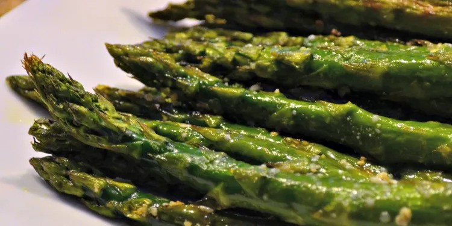

Oven Roasted Asparagus

Description
Roasted asparagus seasoned with garlic, lemon, and Parmesan cheese.
This recipe is super quick to prep and roasting removes any
bitterness. Try it next to lamb or grilled fish.
Ingredients
- Asaparagus
- Olive oil
- Parmesan cheese
- Garlic
- Salt
- Black pepper
- Lemon
Steps
- Pre heat oven to 425 F
- Place asparagus in a mixing bowl and mix it with all the ingredients except the lemons
- Place in Oven and cook until tender. Probably around 12 to 15 minutes. Sprinkle with lemons just before serving